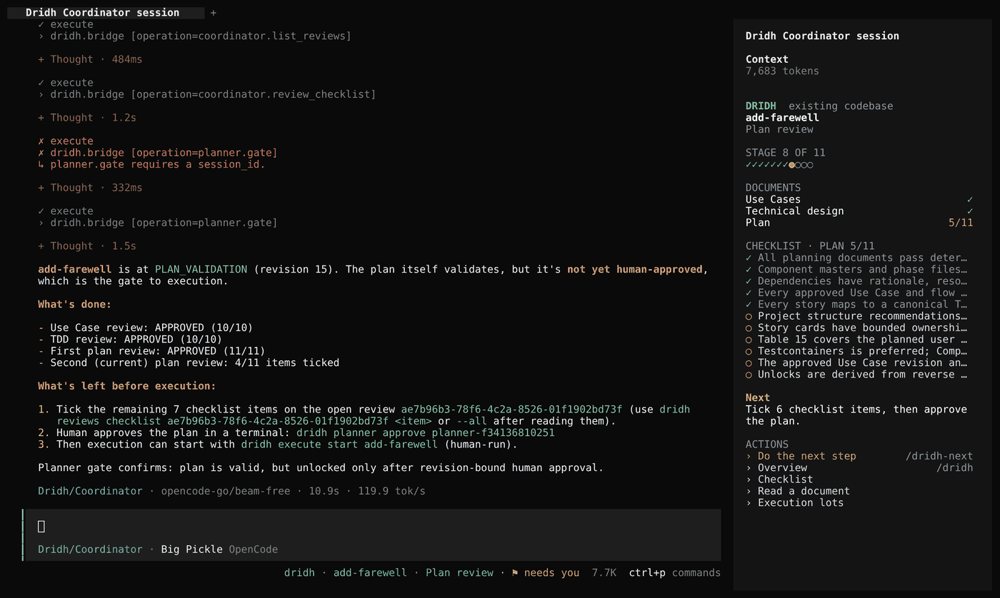
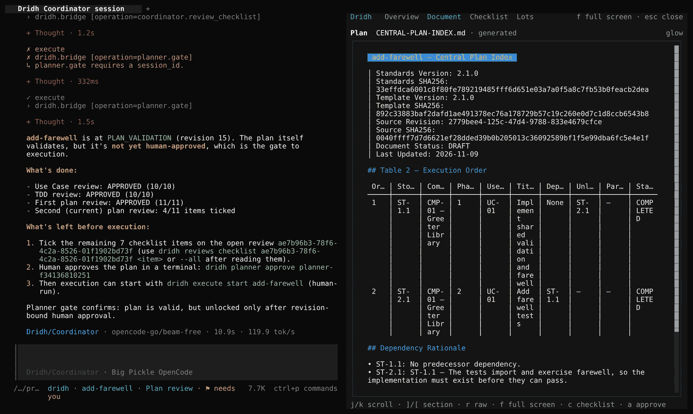
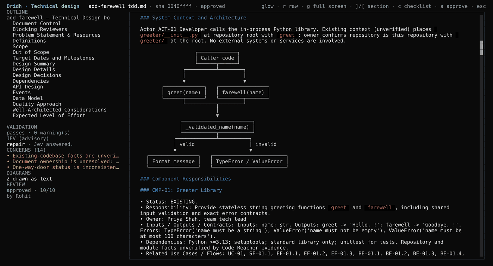

Human-only approvals
Approvals, checklist ticks, starting a run and completing a feature are yours. You do them from Dridh’s panel in OpenCode, and each approval ends with a confirmation you type. No agent can do them.
Dridh runs a feature through fixed stages inside OpenCode: use cases, technical design, plan, execution, delivery. Each produces a validated document, and none opens the next stage until you approve it.
$ curl -fsSL https://github.com/rohit5roy/dridh/releases/latest/download/install.sh | bash
Linux or macOS · OpenCode 2.2.5 or later · then type /dridh in OpenCode
Change an approved document later and it goes back to you for review.
Approvals, checklist ticks, starting a run and completing a feature are yours. You do them from Dridh’s panel in OpenCode, and each approval ends with a confirmation you type. No agent can do them.
Use cases, technical designs and plans are checked against versioned standards. An approval is bound to the exact revision you read. Before delivery, every approved flow is either proven by a passing test or recorded as a deviation you approve.
One worktree and branch per story, its tests in a fresh container with its own network. Stories run in parallel and stop at checkpoint lots for your verdict.
A local index of your code: search by meaning with a local embedding model, call graphs and API endpoints for Python, TypeScript, JavaScript and Java. Agents search it before grep, and it re-indexes on its own when your code changes.
Crashed runs resume, dirty worktrees are saved before cleanup, and every state change is audited. Sixteen recovery scenarios are covered by tests.
A sidebar and panels in OpenCode's terminal interface: documents rendered with glow, Mermaid diagrams drawn as text, execution lots with diffs.



curl -fsSL https://github.com/rohit5roy/dridh/releases/latest/download/install.sh | bashInstall. It checks OpenCode first and shows its plan, then adds Dridh to OpenCode, backing up every file it changes.
/dridhIn OpenCode, in your project, type /dridh. The first time, it asks whether the code is new or existing and sets the project up. Then press Shift+Tab for the Dridh Coordinator and tell it what you want to build.
The one OpenCode is set to. To pin a model for a project, set models.provider and models.default in .opencode/dridh/dridh.yaml.
No. Approvals need an interactive terminal and the exact confirmation text. Scripts, pipes and agents are refused, and no bridge operation approves, ticks a checklist, starts a run or completes a feature.
Dridh's state, documents and code index stay in your project. Model calls go to whichever provider OpenCode uses. The embedding model for code search comes with the release and runs locally. Delivery to GitHub is off unless you turn it on.
No, but it is used when present: each story's tests then run in their own container. Without Docker they run on your machine, and the evidence says so.
Linux and macOS with OpenCode 2.2.5 or later. Windows is not supported. Dridh is pre-1.0.